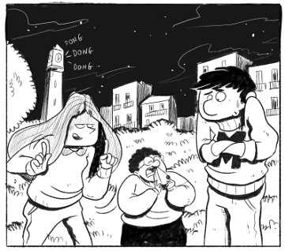

|  |
Mat Maths es un personaje de ficción al que acompañamos durante sus aventuras en la isla donde vive, Izeland, y con el que aprendemos matemáticas. Y es que gracias a las matemáticas conseguimos resolver los misterios que se le presentan.
Las aventuras aparecen en fichas descargables e imprimibles en B/N, con el aspecto de libro de lectura que, además de la historia, contienen cuadros de definición y ejercicios para trabajar los contenidos matemáticos. Mat Maths comprenderá los cuatro cursos de secundaria. Cada curso contendrá de nueve a doce unidades didácticas y cada unidad, tres fichas. Sin embargo, desde el punto de vista de ficción hablamos de temporadas en lugar de cursos; de capítulos en lugar de unidades didácticas; y de actos en lugar de fichas. Mat Maths es motivador y riguroso. Motivador, ya que se enmarca en la tradición de transmitir conocimiento a partir de historias, y riguroso, ya que los contenidos son precisos y curriculares. Mat Maths puede ser útil en muchas situaciones diversas:
Mat Maths ha sido ideado por Xavi Juez, quien también ha elaborado los textos. Las ilustraciones son a cargo de Arnau Solà Vila. Agradeceremos que envíen a izeland.com@gmail.com cualquier tipo de comentario. |